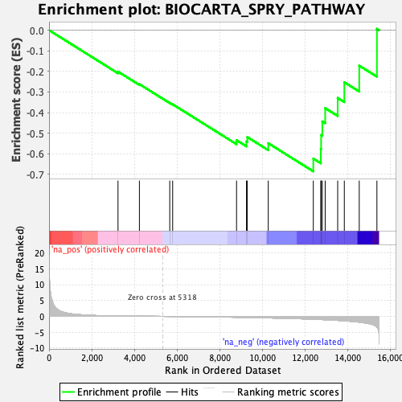
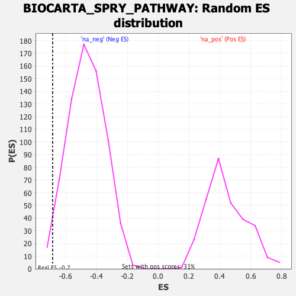

| | | Dataset | DE_genes |
| Phenotype | NoPhenotypeAvailable |
| Upregulated in class | na_neg |
| GeneSet | BIOCARTA_SPRY_PATHWAY |
| Enrichment Score (ES) | -0.6850613 |
| Normalized Enrichment Score (NES) | -1.4704152 |
| Nominal p-value | 0.023021583 |
| FDR q-value | 0.2226279 |
| FWER p-Value | 0.992 |
Table: GSEA Results Summary

Fig 1: Enrichment plot: BIOCARTA_SPRY_PATHWAY
Profile of the Running ES Score & Positions of GeneSet Members on the Rank Ordered List
| PROBE | GENE SYMBOL | GENE_TITLE | RANK IN GENE LIST | RANK METRIC SCORE | RUNNING ES | CORE ENRICHMENT | | 1 | EGFR | | | 3233 | 0.120 | -0.2009 | No |
| 2 | EGF | | | 4236 | 0.056 | -0.2619 | No |
| 3 | GRB2 | | | 5659 | -0.018 | -0.3526 | No |
| 4 | RASA1 | | | 5795 | -0.026 | -0.3596 | No |
| 5 | SPRY3 | | | 8790 | -0.285 | -0.5336 | No |
| 6 | MAP2K1 | | | 9255 | -0.342 | -0.5401 | No |
| 7 | HRAS | | | 9295 | -0.347 | -0.5187 | No |
| 8 | SHC1 | | | 10277 | -0.488 | -0.5485 | No |
| 9 | SPRY2 | | | 12388 | -0.899 | -0.6230 | Yes |
| 10 | SPRY4 | | | 12740 | -0.995 | -0.5771 | Yes |
| 11 | MAPK1 | | | 12754 | -0.998 | -0.5091 | Yes |
| 12 | CBL | | | 12811 | -1.015 | -0.4427 | Yes |
| 13 | MAPK3 | | | 12945 | -1.060 | -0.3782 | Yes |
| 14 | SPRY1 | | | 13531 | -1.265 | -0.3287 | Yes |
| 15 | PTPRB | | | 13842 | -1.398 | -0.2524 | Yes |
| 16 | SOS1 | | | 14542 | -1.821 | -0.1720 | Yes |
| 17 | RAF1 | | | 15370 | -3.364 | 0.0065 | Yes |
Table: GSEA details [plain text format]

Fig 2: BIOCARTA_SPRY_PATHWAY: Random ES distribution
Gene set null distribution of ES for BIOCARTA_SPRY_PATHWAY